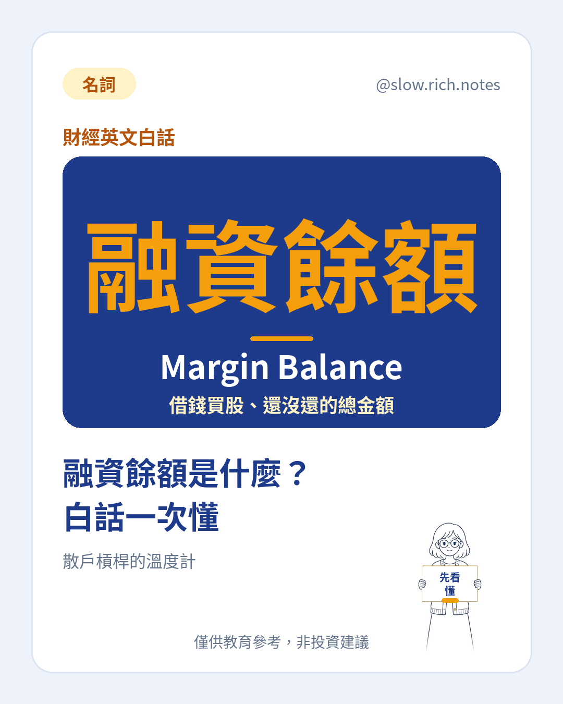

融資餘額英文是 Margin Balance，意思是市場上投資人跟券商借錢買股、到現在還沒還的總金額。想先看短版定義，可以讀我們的融資餘額名詞解釋。
先從「融資」說起。融資就是你自己出一部分錢，其餘向券商借，用借來的錢一起買股票，買進的股票會押在券商那裡當擔保。假設你有 4 萬元（假設例子），再借 6 萬元（假設例子），就能買進 10 萬元（假設例子）的股票。這個動作的細節，可以看融資買進的說明。每個人借了還沒還的錢加總起來，就是整個市場的融資餘額。
那融資餘額變高代表什麼？最直接的解讀是：散戶的槓桿變高了。越多人願意借錢買股，通常表示市場情緒偏樂觀，大家覺得還會漲。槓桿在上漲時會放大獲利，但在下跌時也會同樣放大虧損，所以餘額越高，市場對壞消息就越敏感。
接下來是新手最需要知道的部分：維持率、追繳和斷頭。券商會用「股票市值 ÷ 借款」算出一個維持率，低於規定門檻時，就會要求你補錢，這叫追繳。延續上面的例子，借 6 萬元（假設例子）、股票值 10 萬元（假設例子），如果股價跌了 25%（假設例子），市值剩 7.5 萬元（假設例子），維持率就可能跌破門檻。期限內補不出錢，券商會直接幫你賣掉股票，這就是斷頭。追繳的完整流程，可以讀追繳是什麼這篇。
問題在於，斷頭是「不管價格、一定要賣」。當很多人同時被斷頭，賣壓會一起湧出，股價再跌，又讓更多人維持率不足，形成連鎖反應。這就是為什麼在融資餘額很高的時候遇到大跌，下跌速度往往會被加快，不是因為公司突然變差，而是借錢的人被迫賣出。
那新手該怎麼看這個數字？第一，去哪查：證券交易所和櫃買中心每天都會公布信用交易統計，很多財經網站也會整理成圖表。第二，看趨勢，不要只看單日：餘額是連續好幾週往上衝，還是慢慢下降，比某一天的數字更有意義；也可以把它和大盤成交量、指數漲跌放在一起比較。第三，可以搭配融券一起看，例如券資比，了解看多和看空的力道。
最後一定要提醒：融資餘額不是買賣訊號。餘額高不代表明天一定跌，餘額低也不代表現在就該進場；它只是一個溫度計，告訴你市場上有多少人在用槓桿。把它當作提醒自己「現在大家很熱，我的部位是不是太大」的工具，會比拿來猜漲跌實際得多。如果你自己也在考慮用融資，先想清楚：最壞情況下，我補得出錢嗎？
一句話收尾：融資餘額英文是 Margin Balance，代表借錢買股還沒還的總額。它能幫你看懂市場的槓桿溫度，也能讓你理解為什麼大跌有時候會越跌越快；但它不會替你做決定，慢慢理解，比急著跟風更重要。
本篇為投資教育內容，僅供參考，非投資建議，亦不針對特定股票或商品。融資交易具有槓桿風險，可能損失超過原始投入，文中數字皆為假設例子，實際規定以主管機關與券商公告為準。